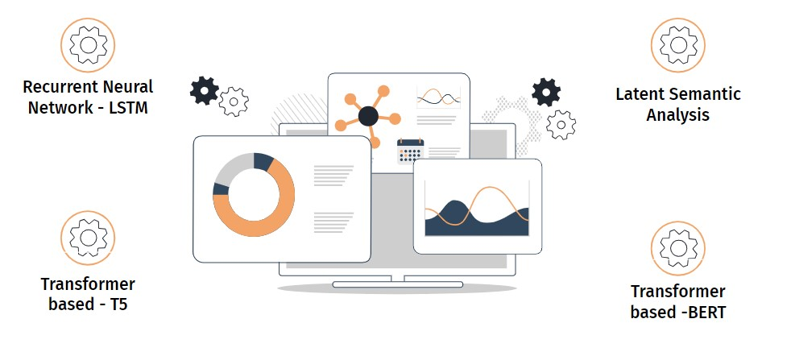
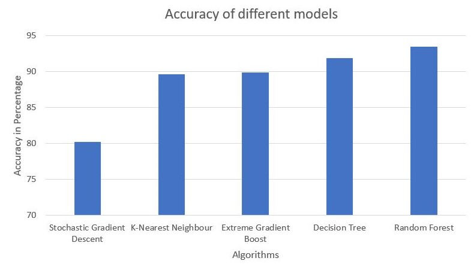
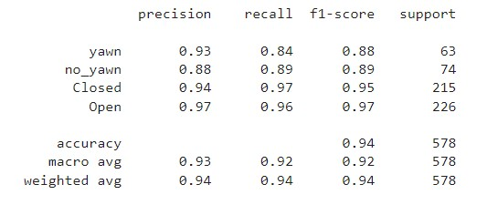
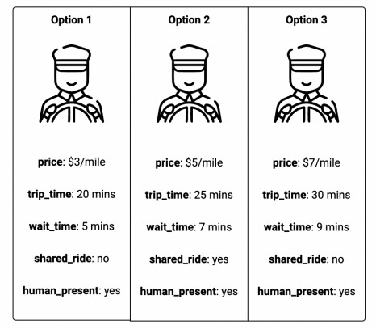
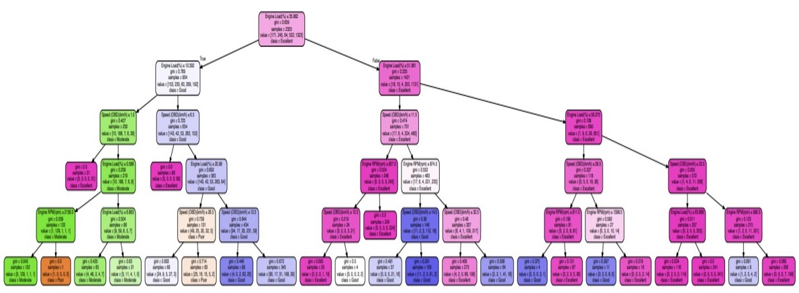

I am a highly skilled and results-driven data analytics professional with a specialization in machine learning, data visualization, and statistical modeling.
With a Master's degree in Data Analytics and a solid foundation in computer science, I possess a deep understanding of programming languages such as Python and
tools including TensorFlow, Tableau, and SQL. My expertise lies in extracting valuable insights from complex datasets and translating them into actionable strategies
that drive informed decision-making. I am passionate about leveraging the power of data to optimize business processes, enhance performance, and achieve tangible outcomes.
With a track record of delivering impactful solutions and a commitment to continuous learning, I am ready to contribute my skills and drive success in any data-driven organization.

Text summarization plays a crucial role in today's information-driven world. With the exponential growth of online content, extracting key insights efficiently is essential.
My project on text summarization utilized advanced techniques to condense large documents into concise summaries, enabling users to quickly grasp essential information.
The project delivered accurate and efficient text summarization solutions by leveraging natural language processing and machine learning algorithms. Stay informed
and save time with the power of text summarization.

Introducing the groundbreaking Heart Illness Prediction algorithm, designed to detect heart disease at an early stage and prevent further damage.
By utilizing a range of classifier techniques, including Stochastic Gradient Descent, K-Nearest Neighbors (KNN), Extreme Gradient Boosting,
Decision Tree, and Random Forest, I have developed a highly accurate model. Extensive evaluation has proven Random Forest to be the most precise
and accurate method for predicting heart disease. Experience the power of early detection and improved healthcare outcomes with this cutting-edge algorithm.

Introducing our project focused on real-time fatigue detection in drivers through an innovative system. Our goal is to develop and deploy an
advanced solution that analyzes facial and eye movements to accurately measure fatigue levels. By detecting early signs of drowsiness, we aim
to prevent potential road accidents that could lead to severe injuries or even fatalities. Join us in our mission to enhance driver safety and
reduce the risks associated with driver fatigue.

In the wake of the ridesharing industry's tremendous growth, the COVID-19 pandemic brought unforeseen challenges, impacting driver availability
and demand. As the market recovers, rideshare companies face a significant driver shortage. To address this issue, investing in a fleet of automated
vehicles emerges as a potential solution. This project explores the viability of automated rideshare fleets compared to traditional taxis, public transportation,
and alternative modes of transportation. We examine the consumer readiness and potential profitability of embracing automated vehicles.

Harnessing the power of real-time data from the On-Board Diagnostics system, our analysis focused on crucial driving operation data, such as vehicle speed,
engine speed (RPM), throttle position, and calculated engine load. These parameters played a significant role in driver identification and rating.
The outcomes obtained can enable insurance companies to accurately assess driver performance, leading to better premium assignments. Discover the
potential of data-driven insights for enhanced driver evaluation and improved insurance practices.
Exploring the captivating world of Olympic history, our project delved into uncovering intriguing trends and insights. By leveraging powerful
technologies like Apache Hadoop, Apache Hive, MySQL, and Cloudera Manager, we established a robust infrastructure on AWS. Through comprehensive
analysis, we shed light on historical Olympic data, enabling trivia enthusiasts and researchers to delve deeper into the rich tapestry of Olympic
events. Join us on a captivating journey through the annals of the Olympics, fueled by data-driven exploration and analysis.